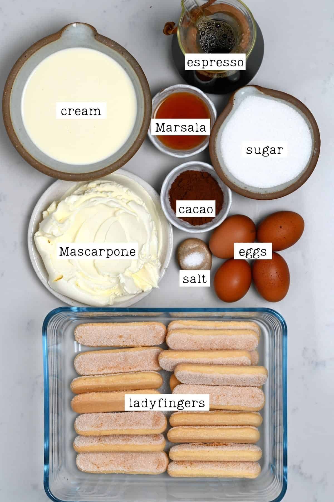
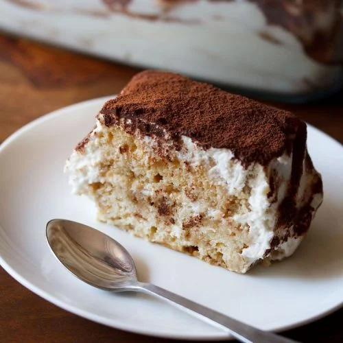
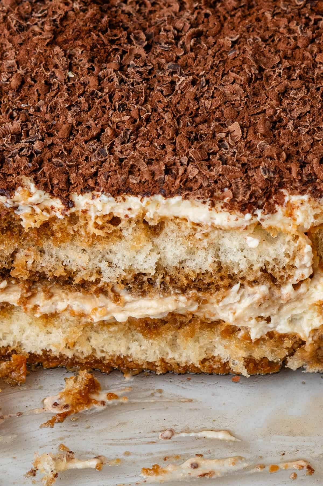
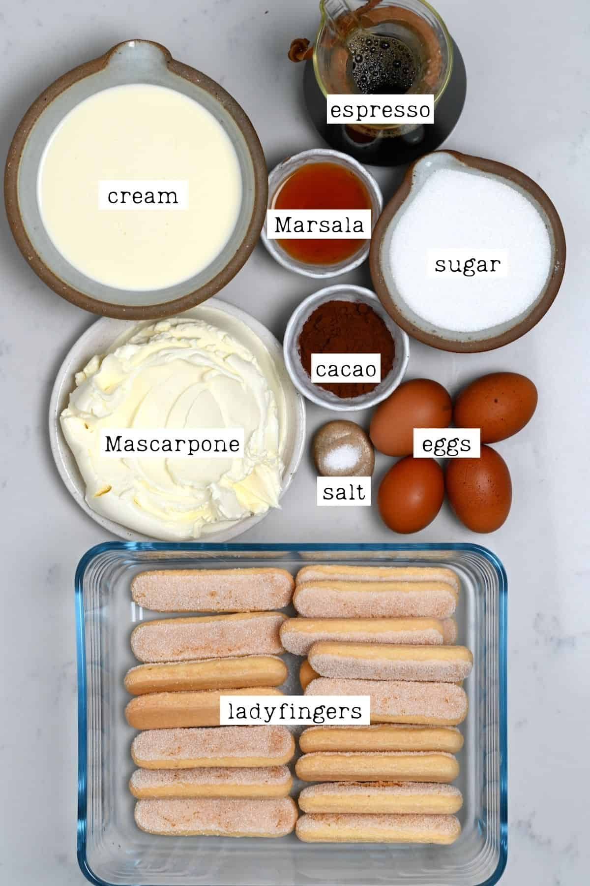
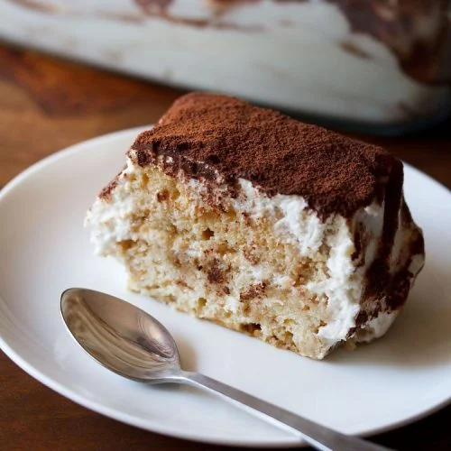
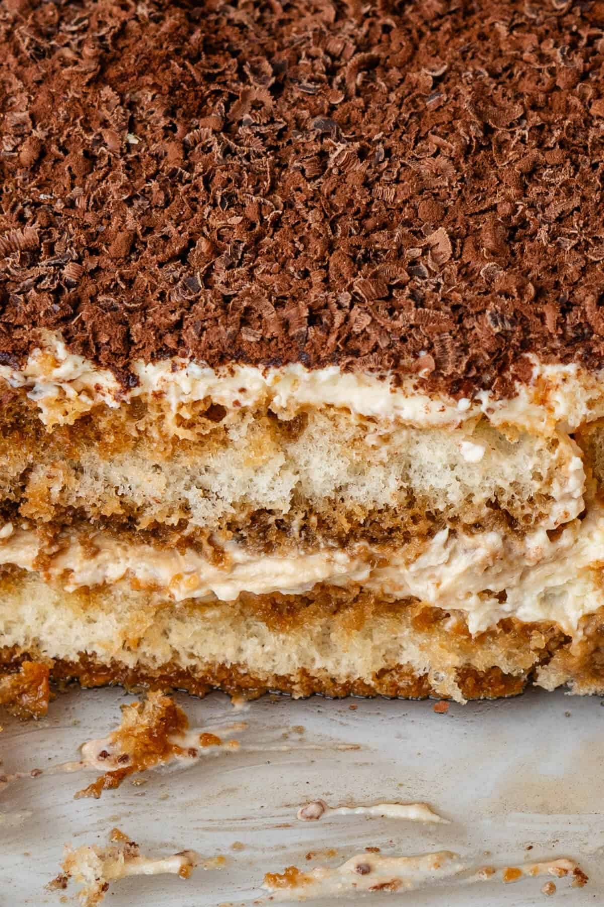

Tiramisu has always been my absolute favorite cake. Ever since I was ten, I have eaten it for my birthday!
 





Tastes Better From Scratch is the website I will be using as my reference. I chose this website because it has very clear-cut instructions and ingredients listed out on the page. Additionally, the website uses incredibly legible typography and a cohesive color palette. I especially appreciate the website's large images showcasing not only the final product, but the ingredients required to start baking!
Sally's Baking Addiction is a great example example of a baking website that utilizes a really nice color palette. I love the pastel blues, oranges, and pinks, as to me, they represent the idea of baking well! I also really love how the website uses cute icons in their navigation bar, as it's an adorable way to represent the different webpages clearly.
Love and Lemons is another well-formatted recipe website! It uses a very dinstinctive serif font for its titles and body text, as well as creative decorations for the headers. One thing I also really enjoyed was the option for users to directly add the website's photos to a Pinterest Board; when users hover over an image, they are shown the words, "PIN IT," which takes them directly to Pinterest!
The Jellycat website perfectly encapsulates the cute, comfortable image of the brand. It uses images that evoke a sense of playfulness, and keeps the background of its products/stuffed animals white so that they pop out well. Most of all, it uses an aqua color for its accents, making it clear to users what things are interactive and what are not.
The moooi website does an effective job at being simple, but creative with its design. It utilizes a minimalistic approach, with neutral colors and sufficient negative space. I especially liked how the home page has its images take up the entire width of the screen, as it showcases the products clearly.
The MoMA website establishes hierarchy efficiently through its difference in text types. For instance, it uses bold, large font to show what is a title/subtitle, and maintains a consistent style for its images, as most are justified to the right.